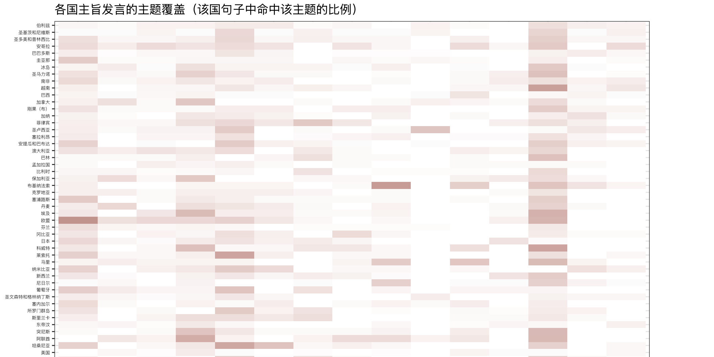
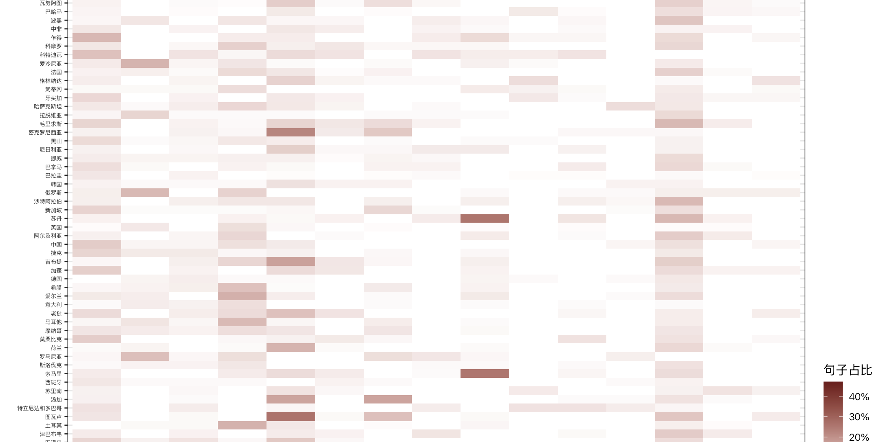
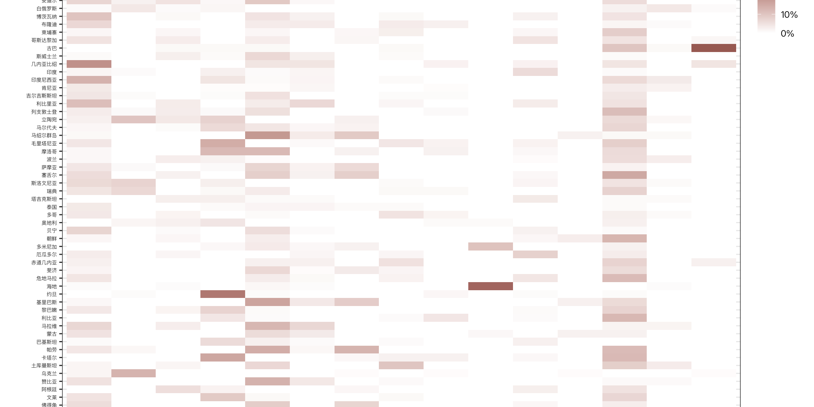
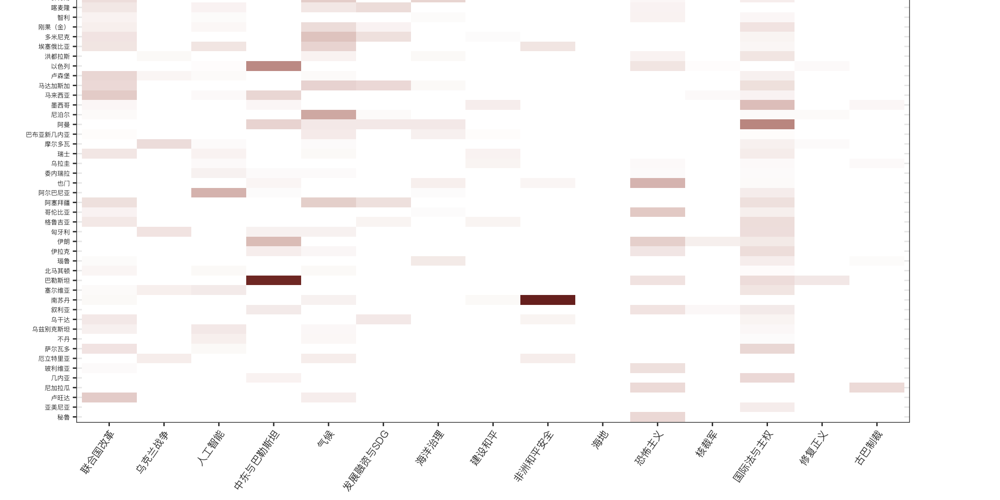

国际组织中的南方国家
从发言文本看第81届联大一般性辩论：共同议程、国家差异与外交争论

第81届联大一般性辩论以“重建信任，管理变革：一个为所有人带来实效的联合国”为主题。对各国主旨发言的文本分析显示：国际法与主权、气候、中东和联合国改革既是跨地区议题，也是各国阐述自身处境的不同入口。国家之间相互提及则使一般性辩论呈现另一面景象：共同的多边会场里，存在多个高度具体、互不相同的双边与地区争议。
词频衡量措辞出现次数。主题的“国家占比”实际是194个发言方中至少有一句命中该主题的比例。相似度仅表示用词相近。提及次数表示点名的频率，不能直接解释为赞同或批评。“194”和“27”指发言篇数；发言方包含欧盟、巴勒斯坦等，不能理解为联合国会员国或主权国家。
一、分析范围与会议背景
联合国大会由联合国会员国共同组成，是联合国主要的审议、监督和审查机构。本届一般性辩论于9月22日至28日在纽约联合国总部举行。同期还举办了气候行动和公正转型、纪念《发展权利宣言》通过40周年、应对海平面上升的生存威胁、大流行病防范与应对、纪念《德班宣言和行动纲领》通过25周年等高级别会议。下文的统计只针对一般性辩论发言，不考虑同期专题会议讲话。
分析的语料包括194篇主旨发言和27篇补充发言。第一至第四部分严格只用主旨发言；第五部分讨论主旨发言中的点名；第六部分单列补充发言。秘书长和大会主席的讲话均不计入本文的分析。
二、总体在谈什么：安全、发展与制度语言
观察主旨发言中已单独列出的代表性高频实词，“安全”出现1470次，“发展”1139次，“全球”844次，“信任”703次，“气候”653次，“合作”614次。这些词显示，本届辩论并非围绕单一危机展开：安全与发展仍是最常用的共同语言，信任、机构、合作则反映了对联合国作用的持续讨论。

高频词只反映议题的可见程度，不能说明各国对同一个词赋予相同含义。这些共同词汇的政治含义需要结合上下文判断。同样谈“安全”，有人讨论武力冲突与边界，有人讨论气候风险与粮食；同样谈“发展”，有人强调融资和债务，有人强调技术与能源转型。
三、哪些国家发言相似：共同问题不等于共同立场
按各段主旨发言的词频计算 TF–IDF，再比较余弦相似度，若干接近组合包括巴勒斯坦—约旦（0.25）、朝鲜—韩国（0.23）、南非—南苏丹（0.20）；美国—以色列和以色列—伊朗均为0.17，乌克兰—俄罗斯为0.16。相似值总体不高，说明一般性辩论中的共同外交词汇并未抹去各国讲话的差异。

尤其需要区分“讨论同一对象”和“持相同立场”。乌克兰与俄罗斯、以色列与伊朗、朝鲜与韩国相互谈及相同争端，词汇因此可能接近，却不能据此推断政策一致。
| 发言方 | 词项最接近的三个发言方（余弦值） |
|---|---|
| 美国 | 以色列（0.17）；乌克兰（0.14）；俄罗斯（0.12） |
| 中国 | 尼加拉瓜（0.11）；捷克（0.09）；哈萨克斯坦（0.08） |
| 俄罗斯 | 乌克兰（0.16）；白俄罗斯（0.15）；美国（0.12） |
| 乌克兰 | 俄罗斯（0.16）；美国（0.14）；摩尔多瓦（0.13） |
| 以色列 | 伊朗（0.17）；美国（0.17）；约旦（0.12） |
| 巴勒斯坦 | 约旦（0.25）；卡塔尔（0.17）；埃及（0.16） |
| 伊朗 | 以色列（0.17）；美国（0.12）；欧盟（0.09） |
| 朝鲜 | 韩国（0.23）；日本（0.15）；乌克兰（0.07） |
| 韩国 | 朝鲜（0.23）；东帝汶（0.12）；日本（0.10） |
| 巴西 | 南非（0.12）；欧盟（0.09）；加纳（0.09） |
| 南非 | 南苏丹（0.20）；安哥拉（0.14）；肯尼亚（0.13） |
四、15个预设主题：议程有多广、重点落在何处
预先设定的15个议题覆盖国际法与主权、联合国改革、中东与巴勒斯坦、气候、人工智能、发展融资等。对21,312个主旨发言句子逐句用关键词规则编码后，国际法与主权命中977句，占全部句子的4.6%，覆盖180个发言方；气候命中765句，涉及153个发言方；中东与巴勒斯坦命中700句，涉及126个发言方；联合国改革命中660句，涉及163个发言方。句子占比普遍只有个位数，反映的是每一类在全部句子中的份额，不能据此认为其不重要：大量句子是礼仪、背景或难以由这15类覆盖的其他内容。
两种比例展示的是不同的议程结构。联合国改革在163个发言方中至少出现一次，覆盖面达到84.0%，但其句子占比为3.1%；中东与巴勒斯坦议题覆盖面为64.9%，句子占比却略高（3.3%）。这表明“被多少发言方谈到”和“每段发言投入多少篇幅”不应混为一个指标。人工智能与数字治理覆盖124个发言方（63.9%），命中262句（1.2%）；它已经是广泛提及的新议程，但在长篇国家主旨发言中的篇幅仍相对有限。
各国的主题组合
某些议题具有鲜明的国家或地区聚集性。气候议题在图瓦卢主旨发言中的命中句占比为26%，密克罗尼西亚为22%，马绍尔群岛为18%；海洋议题在汤加为16%、帕劳为13%。中东与巴勒斯坦议题在巴勒斯坦为45%、约旦为25%、以色列为21%；非洲和平与安全在南苏丹为47%、苏丹为26%、索马里为25%。这说明发言方不仅在谈共同的联合国议程，也在将自身的生存、发展和安全处境放进议程之中。
| 预设主题 | 主旨发言中该主题句子占比最高的五个发言方 |
|---|---|
| 联合国改革 | 几内亚比绍（20%）；欧盟（19%）；印度尼西亚（13%）；乍得（12%）；利比里亚（11%） |
| 乌克兰战争 | 乌克兰（13%）；爱沙尼亚（13%）；俄罗斯（12%）；罗马尼亚（11%）；立陶宛（10%） |
| 人工智能 | 阿尔巴尼亚（13%）；欧盟（6%）；安哥拉（6%）；阿根廷（5%）；澳大利亚（5%） |
| 中东与巴勒斯坦 | 巴勒斯坦（45%）；约旦（25%）；以色列（21%）；卡塔尔（16%）；毛里塔尼亚（14%） |
| 气候 | 图瓦卢（26%）；密克罗尼西亚（22%）；马绍尔群岛（18%）；吉布提（17%）；汤加（16%） |
| 发展融资与SDG | 坦桑尼亚（10%）；马拉维（7%）；利比里亚（6%）；马达加斯加（6%）；纳米比亚（6%） |
| 海洋治理 | 汤加（16%）；帕劳（13%）；图瓦卢（11%）；密克罗尼西亚（9%）；菲律宾（9%） |
| 建设和平 | 土库曼斯坦（10%）；冈比亚（6%）；阿联酋（6%）；赤道几内亚（5%）；多哥（5%） |
| 非洲和平安全 | 南苏丹（47%）；苏丹（26%）；索马里（25%）；布基纳法索（18%）；马里（9%） |
| 海地 | 海地（29%）；多米尼加（10%）；圣卢西亚（10%）；格林纳达（6%）；特立尼达和多巴哥（5%） |
| 恐怖主义 | 也门（13%）；马里（10%）；哥伦比亚（9%）；布基纳法索（8%）；伊朗（8%） |
| 核裁军 | 哈萨克斯坦（6%）；日本（5%）；新西兰（5%）；保加利亚（4%）；南非（3%） |
| 国际法与主权 | 阿曼（22%）；越南（17%）；科威特（16%）；塞舌尔（15%）；埃及（14%） |
| 修复正义 | 加纳（5%）；纳米比亚（5%）；苏里南（5%）；布基纳法索（5%）；圣卢西亚（4%） |
| 古巴制裁 | 古巴（32%）；尼加拉瓜（6%）；安哥拉（6%）；格林纳达（5%）；几内亚比绍（4%） |
各发言方与15个主题的覆盖热图




原分析生成的194个发言方 × 15个预设主题覆盖图。各格为该发言方主旨发言中命中相应主题的句子比例。拆成四段只为便于阅读，数值未改。可在框内滚动查看。
五、谁在提及谁：多边会场里的具体争议
在主旨发言中，最常被点名的对象是巴勒斯坦（269次、89个发言方提到）、乌克兰（240次、78个发言方）、俄罗斯（214次、55个发言方）、以色列（183次、73个发言方）、加沙（159次、70个发言方）、美国（137次、70个发言方）。这里巴勒斯坦、乌克兰等是被提及的对象，加沙则是地名节点；它们出现在同一图中，并不意味着政治或法律身份相同。
在“发言方 → 对象”关系上：乌克兰提及俄罗斯48次，亚美尼亚提及阿塞拜疆30次，古巴提及美国21次，以色列提及伊朗19次，约旦提及以色列19次。把方向保留下来，可以看到议程在不同国家发言中是如何被组织的。例如，约旦既提及以色列，也提及巴勒斯坦；同一对象的高频提及，在不同发言人那里可能承载完全不同的意义。

这一框架也有助于理解以色列总理内塔尼亚胡发言时部分代表离席的场景：离席是会场中的外交姿态，与在正式主旨发言中提及以色列、加沙或巴勒斯坦是两种不同数据。某国有没有离席、离席的具体原因，都不能由词频或提及网络推断；反过来，留下聆听也不等于支持其发言。英文笔记另行讨论这场退席能够说明什么、不能说明什么。
六、补充发言：谁使用了、争论向何处集中
一般性辩论另有18个发言方留下27篇补充发言记录。日本有3篇；乍得、中国、朝鲜、伊朗、菲律宾、苏丹和阿联酋各有2篇；其余10个发言方各有1篇。值得说明的是：巴勒斯坦的一篇是观察员介绍阿巴斯的视频讲话，其余26篇为答辩权发言。
单看补充发言文本的提及关系，日本被提及47次，苏丹31次，以色列20次，美国18次，中国15次。较强的定向关系包括朝鲜→日本25次、中国→日本22次、阿联酋→苏丹17次、伊朗→以色列14次、乍得→苏丹14次、泰国→柬埔寨13次。这与主旨发言的广泛议题格局形成差别：较短的补充发言往往围绕一个具体对象集中回应。

结语：共同词汇之下的多重议程
本届一般性辩论显示了联合国大会的双重功能。一方面，“安全”“发展”“信任”等词构成各国可以共同使用的语言，国际法与联合国改革也跨越了多数发言。另一方面，气候风险对于海岛国家、战争对于直接当事方、区域安全对于非洲受冲突影响国家，具有不同的紧迫性。国家间点名的网络进一步表明，表面上统一的一场一般性辩论，实际上容纳了多条方向明确的争论线索。
资料：作者自行收集的第81届联大一般性辩论的194篇主旨发言和27篇补充发言（26篇为答辩发言）。所有图表都是基于 R 语言进行文本分析的结果。